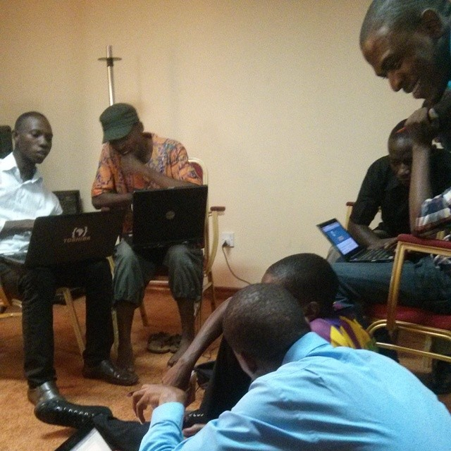
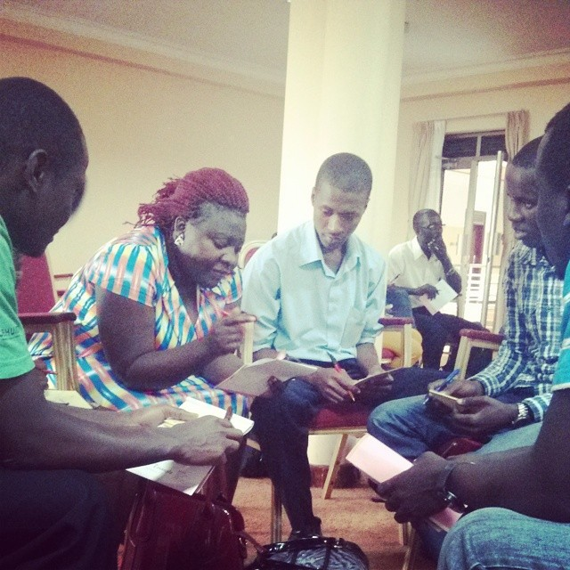
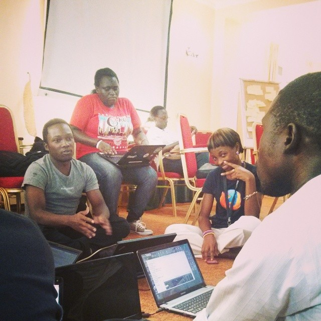
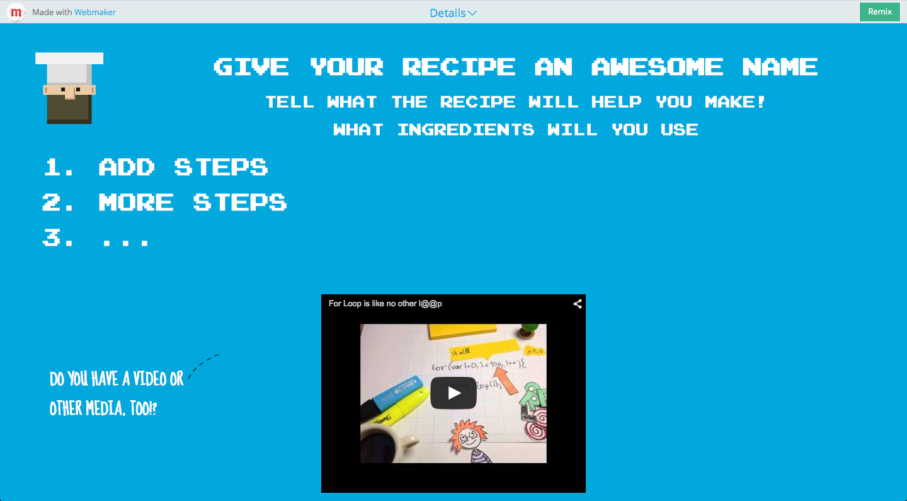
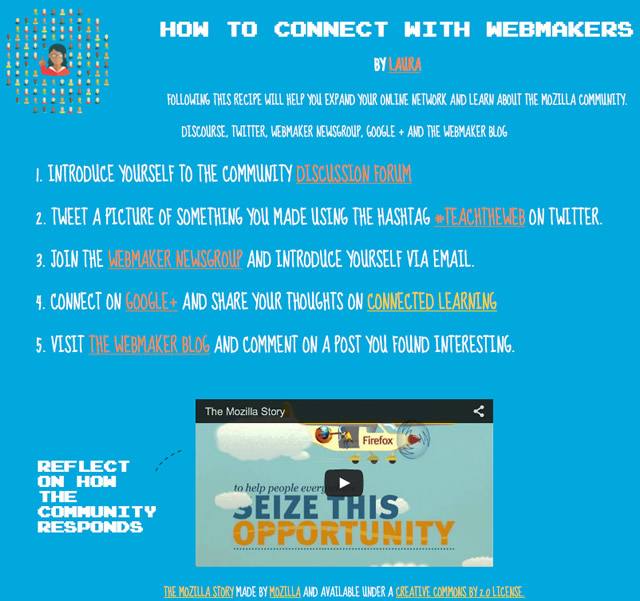
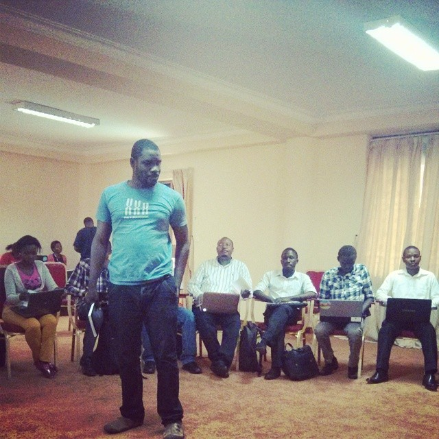

Section 3. Participating on the Web
Web Chef
Made by Mozilla, and inspired by Creative Commons and P2PU School of Open.
Learners will teach their peers a skill and document the steps by making a web resource that includes properly attributed open content.
1 - 2 hours
-
Preparation
Do the activity on your own to become familiar with it.
Print the Web Chef Recipe template for your learners, if you won't have access to the web.
Complete the pre-activity questionnaire, and have your learners complete their pre-activity questionnaire.
-
15
minTeaching in Pairs
Begin the session by explaining that everyone has something to learn and to teach and that one of the benefits of the open web is that it's easy to share your knowledge with others.
Have learners team up into pairs. Invite the learners to think briefly about a simple skill they can share with their partner. Some examples include: a new dance, a more efficient way to tie your shoe, or how to say something in another language.
For five minutes, the first partner teaches their skill to their partner. Then switch. After both partners have gone, gather back as a large group. Ask a few pairs to briefly explain what their partner taught them. Encourage them to reflect on what made instructions easy to understand and memorable.
 -
10
minWrite a recipe
Now explain how good instructions are like recipes in a cookbook. Chefs write recipes to share with other chefs and also to remind themselves about how to do something.
In the same pairs, invite your learners to write a brief summary of the steps required to learn their skill. Encourage the pairs to review each others' recipes and to give constructive feedback to make the recipes better.
 -
10
minGather your ingredients
Introduce the idea that chefs can use the web to better illustrate their recipes. Invite the pairs to search the web to find openly licensed content that would bring their recipes to life.
To easily find openly licensed content, try using these services:
Explain that chefs acknowledge their inspiration and give attribution to others. That's part of the culture of sharing openly.
Use the Web Chef recipe template, to have the pairs sequence their recipe's steps and attribute the web content. If you have low-connectivity, just use pen and paper to write your recipe and show what additional resources would be added.

If time permits, your learners can also make their own web content. Think about taking photos, making a quick video or writing a new text as part of the recipe. Bonus if your learners create these resources on their mobile phones, using services like Flickr, Wikimedia Commons, SoundCloud and YouTube to make something they can post to the web and easily add an open license to.
 -
10
minWeb Chef Cooking Show
Gather all the recipes and everyone back into a big group. Now all the Web Chefs are ready for a cooking show! Assign two pairs of chefs to complete a recipe from another group. The two pairs race each other to see who can successfully follow the recipe fastest.
Make it more challenging by having pairs complete the recipe blindfolded, or while hopping on one leg, etc.
After a few rounds, reflect on what made good recipes. What other information would help? Did anyone modify a recipe as they did it? If so, why and how could you share that modification with other chefs?
Complete the post-activity questionnaire, and have your learners complete their post-activity questionnaires.